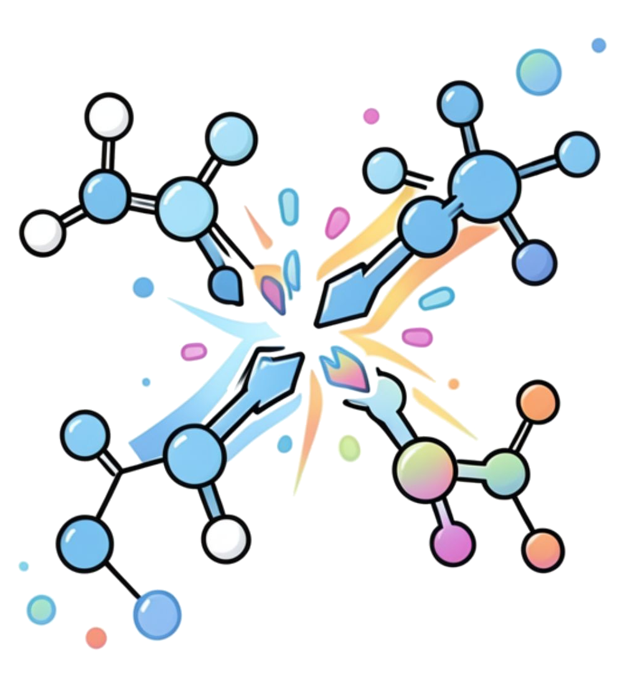
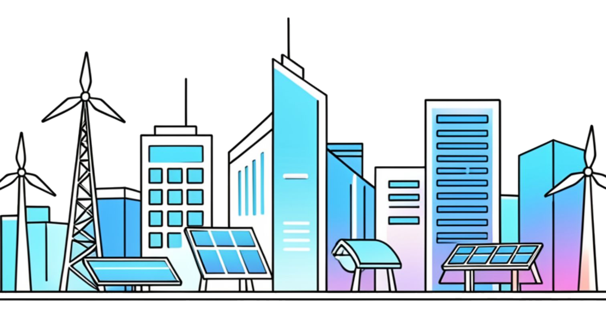
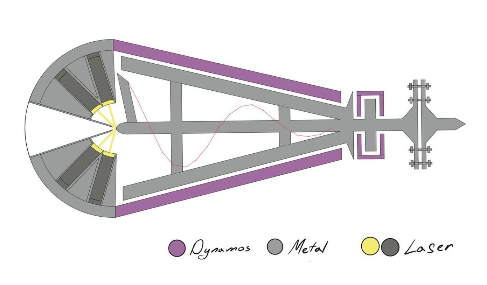
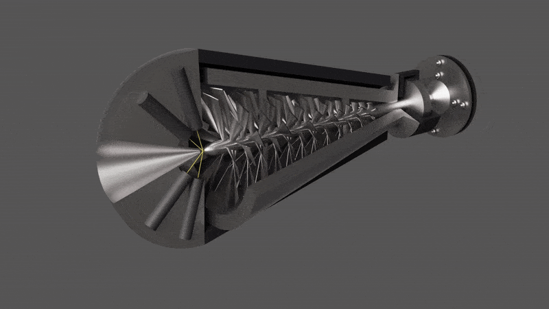
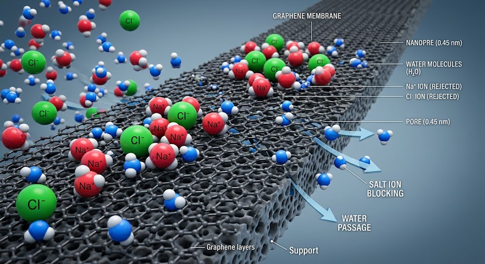
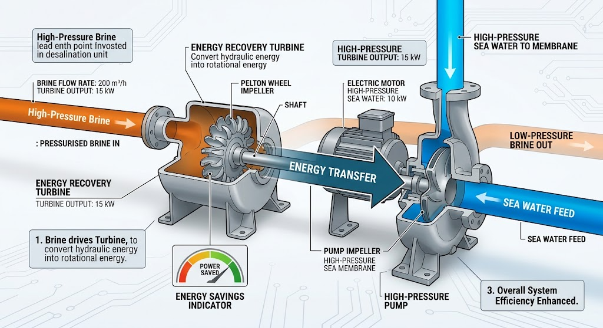
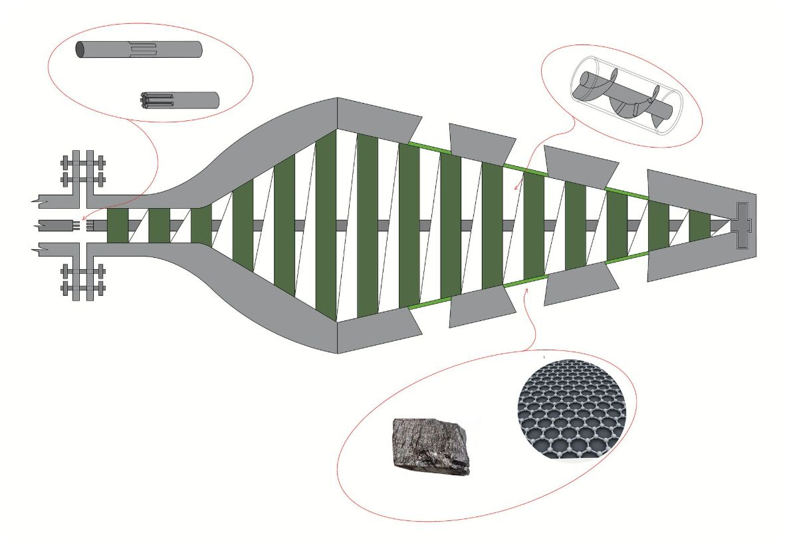
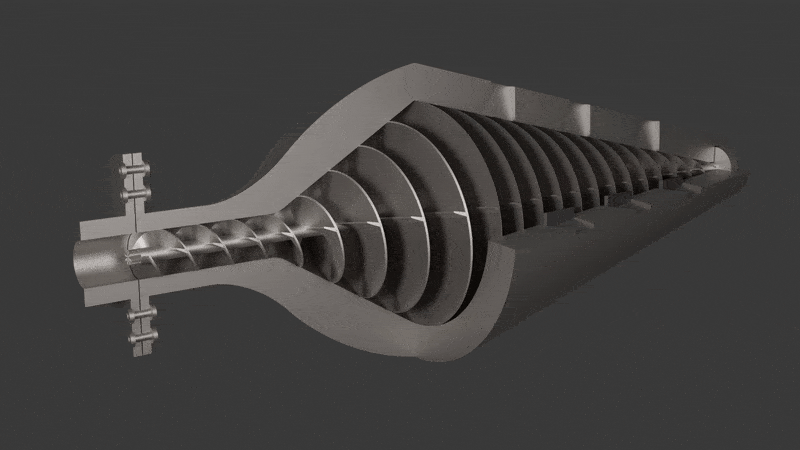
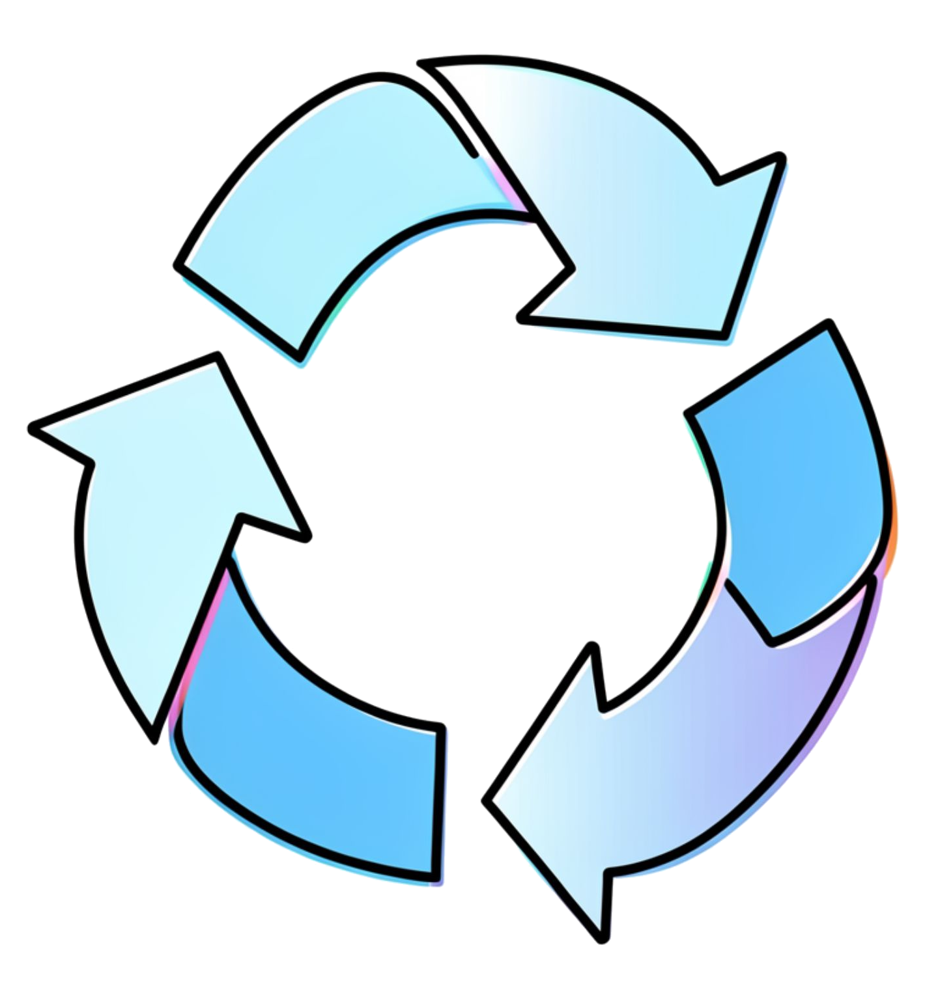
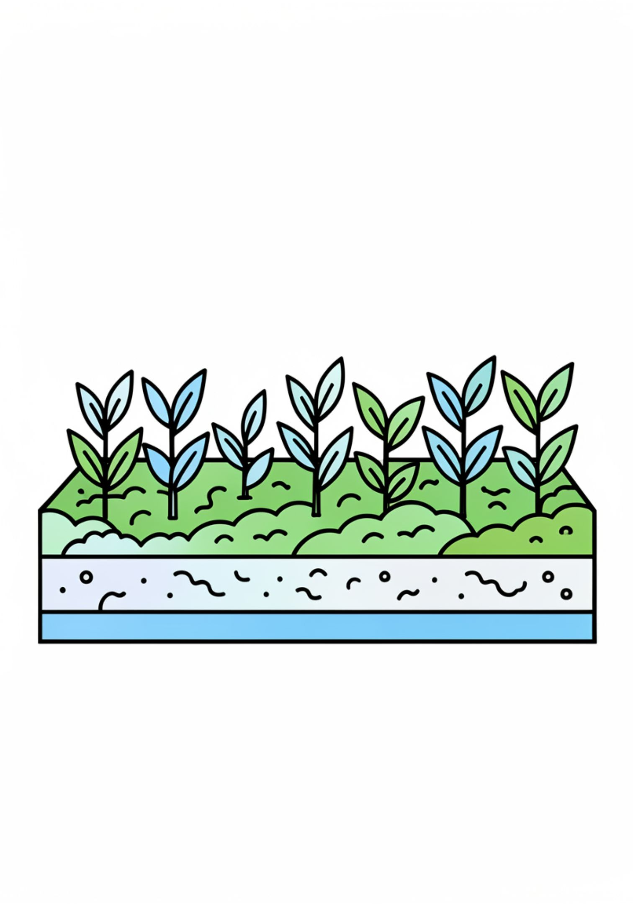

Clean energy systems
Exploring turbine, thermal and electrochemical architectures while keeping energy inputs, outputs and losses explicit.
WALES · INTERNATIONAL · CLEAN TECHNOLOGY
AJ DAVEY CLIMATE CHANGE INNOVATION DESIGNS LTD is a Wales-based engineering and clean-technology company exploring ambitious systems across clean energy, hydrogen, advanced water treatment, desalination and resource recovery, with applications intended for an international audience.
RESEARCH PLATFORM
Andrew John Davey's research programme connects molecular-scale ideas with practical energy and environmental engineering. The original presentation frames three interconnected areas: carbon emissions, clean energy and advanced water purification.

The central research framing is the exploration of methods for manipulating gaseous molecules and their bonds, alongside selective molecular-scale separation for environmental and energy applications.
Exploring turbine, thermal and electrochemical architectures while keeping energy inputs, outputs and losses explicit.
Investigating membrane-based separation, desalination and integrated hydraulic energy recovery.
Considering recovery and reuse pathways for water, carbon-containing materials and other process streams.
WALES / THE WORLD
AJ DAVEY CLIMATE CHANGE INNOVATION DESIGNS LTD is presented as a Welsh company with a technology focus that is not limited to one market. The website therefore keeps Wales and UK evidence at the centre of its verification basis while recognising the international research landscape around hydrogen, membranes and clean technology.

ENERGY CONCEPT
The presentation proposes a turbine architecture combining water treatment, high-temperature processing and electricity generation.
The original presentation described laser heating of H₂O to around 3,200°C to break molecular bonds and suggested a self-sustaining electricity cycle. The website retains this as an experimental concept rather than an established process. Water splitting requires an energy input, and low-carbon hydrogen depends on the energy source and production pathway.


WATER TECHNOLOGY
The presentation combines nanoporous graphene, pressure-driven filtration and an energy-recovery turbine. Nanoporous graphene is a real research direction, but commercial deployment still involves significant materials and engineering challenges.
Research has demonstrated promising graphene and graphene-oxide membrane approaches for salt rejection and water transport. Practical systems still need to address pore control, defects, fouling, mechanical stability, manufacturing scale and long-term operation.
Pressure-driven desalination is established technology. Energy-recovery devices can recover useful hydraulic energy from pressurised brine. AJD's proposed system combines these established principles with a graphene membrane concept.




The presentation pairs a graphene filtration layer with an Archimedes screw-style mechanical component. These mechanisms are described separately here rather than attributing unsupported centrifugal separation effects to the screw.
EMISSIONS RESEARCH
A proposed vehicle-exhaust treatment concept focused on separating and recovering useful components from complex exhaust streams.
Vehicle exhaust contains compounds such as carbon dioxide, water vapour, nitrogen, oxygen, carbon monoxide, hydrocarbons and nitrogen oxides. The website therefore presents elemental breakdown and atomic-weight sorting as research questions, not established capabilities of a graphene layer.

CIRCULAR DESIGN
The original deck proposes recycling useful components back into an engine and converting captured carbon and nitrogen into pellets. Those outcomes require chemical characterisation and process validation, so the website presents them as potential pathways.
Captured carbon could potentially be stored or converted into useful products, depending on purity, chemistry, energy demand and lifecycle performance.
Useful agricultural nitrogen normally requires a chemically available nitrogen compound rather than elemental nitrogen. Conversion and safety would need to be demonstrated.
Hydrogen can be used as an energy carrier, but producing it from water or recovered compounds requires an appropriate energy input and validated process.
AGRICULTURAL POTENTIAL
The original presentation links recovered carbon and nitrogen to agriculture. Any real-world use would depend on the chemical form, purity, safety and agronomic performance of the final material.

Potential use of appropriately processed recovered materials as soil amendments.
Any yield benefit would need controlled agricultural trials, nutrient analysis and safety assessment.
Prioritising measurable reuse and lifecycle performance over unsupported fertiliser claims.
THE OUTLOOK
AJ DAVEY CLIMATE CHANGE INNOVATION DESIGNS LTD is exploring an interconnected clean-tech ecosystem. The next step is validation through prototypes, measurements, energy balances, membrane testing, lifecycle analysis and independent review.
VERIFICATION BASIS
The website follows the original presentation's concepts while checking factual claims against public guidance and research. Welsh and UK sources are prioritised because AJD is Wales-based, with selected EU and US material used where it adds useful international context.
Hydrogen policy, climate innovation and Wales' clean-growth direction.
Hydrogen Policy ↗Climate Innovation Scheme ↗Environmental permitting and water-resource considerations for hydrogen production in Wales.
Hydrogen permits ↗Electrolysis permitting ↗UK hydrogen strategy and environmental guidance for electrolysis and low-carbon hydrogen production.
Electrolysis guidance ↗UK Hydrogen Strategy ↗UK research and public-facing material on graphene membranes and desalination.
Graphene desalination ↗Renewable desalination research ↗International policy context for renewable hydrogen and its role in decarbonisation.
Renewable hydrogen ↗Additional international context for electrolysis and thermochemical water-splitting pathways.
Hydrogen electrolysis ↗Hydrogen production pathways ↗